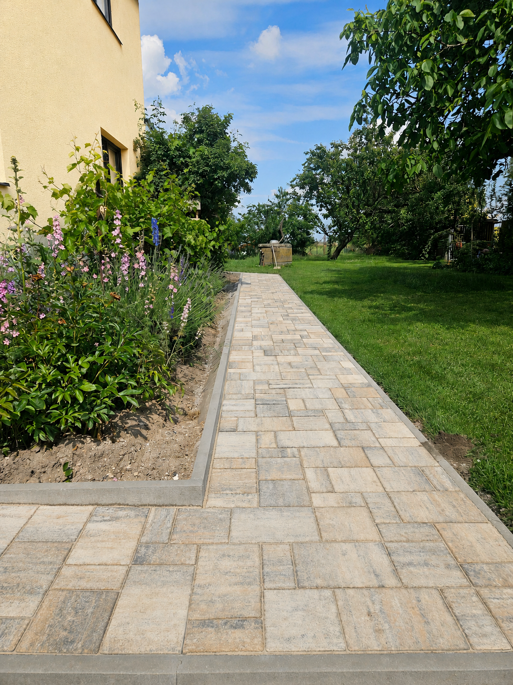
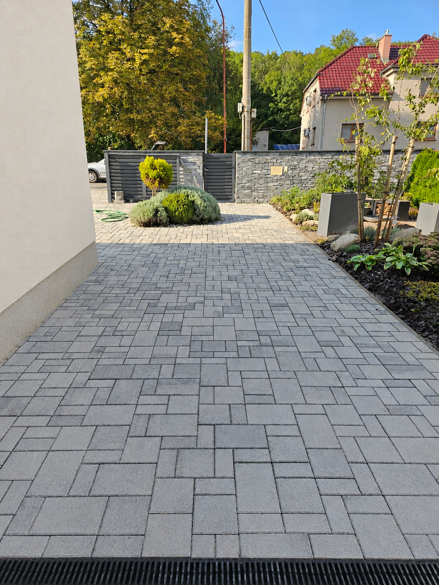
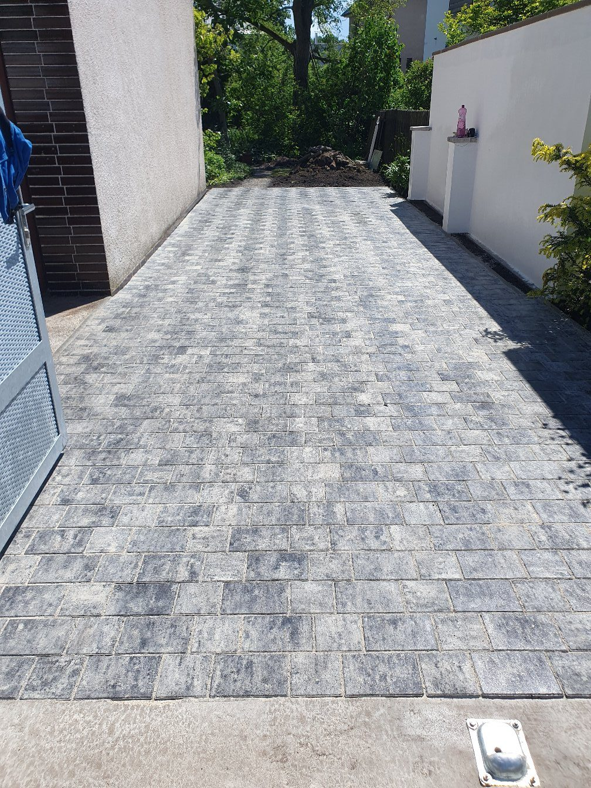
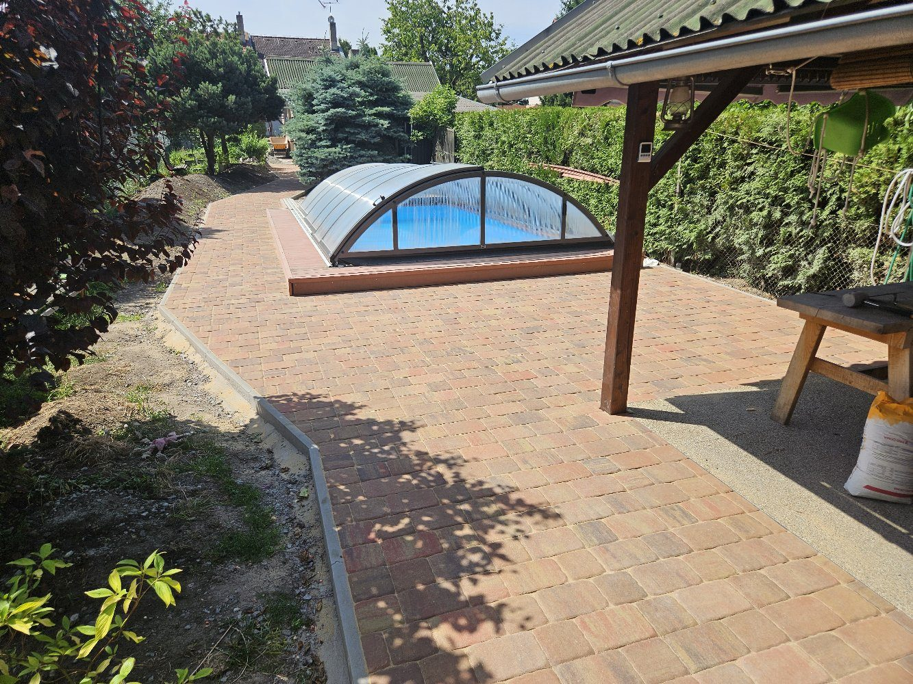
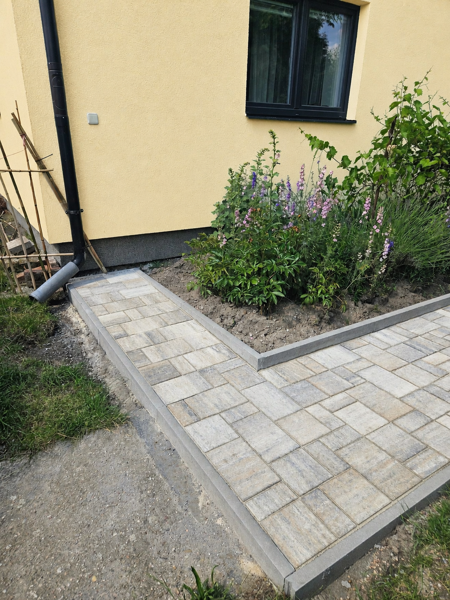

Chodníky kolem domu
Chodníky ke vstupu, kolem domu, na zahradě, k pergole nebo k bazénu. Včetně podkladu, spádování a obrubníků.
Chrudim a okolí do cca 40 km
Realizujeme pokládku zámkové dlažby, chodníky, vjezdy, parkovací stání, terasy, obrubníky a zpevněné plochy kolem domu. Postaráme se o přípravu podkladu, pokládku dlažby i finální úklid.

Lokální řemeslná realizace
Pomůžeme s návrhem řešení podle využití plochy, připravíme podklad, osadíme obrubníky a položíme dlažbu tak, aby výsledek dobře sloužil a zapadl k domu i zahradě. Pracujeme na Chrudimsku, Pardubicku a v okolí do cca 40 km, například v Chrudimi, Pardubicích, Slatiňanech, Heřmanově Městci, Chrasti, Hrochově Týnci, Skutči, Nasavrkách, Seči a Holicích.
Poradíme s návrhem
Často stačí poslat fotky místa a říct, co má plocha splňovat. Podle situace navrhneme vhodné řešení – kudy vést chodník, jak široký má být vjezd, kde použít obrubníky, jak řešit spádování i jakou skladbu podkladu zvolit.
Mnohdy zákazník dopředu přesně neví, co chce. Od toho jsme tu my – ukážeme možnosti a doporučíme řešení, které bude dávat smysl prakticky i vzhledově.
Co děláme

Chodníky ke vstupu, kolem domu, na zahradě, k pergole nebo k bazénu. Včetně podkladu, spádování a obrubníků.

Pojezdové plochy pro osobní auta, vjezdy ke garáži, parkovací místa a příjezdy k domu.

Zpevněné plochy kolem bazénů, pergol, zahradních domků a posezení. Praktické řešení pro běžné používání.

Osazení obrubníků, oddělení dlažby od trávníku nebo záhonů a čisté zakončení celé plochy.
Orientační ceny zámkové dlažby
Cena se odvíjí od velikosti plochy, stavu podkladu, přístupu na pozemek, typu dlažby, obrubníků, výkopu a odvozu materiálu. Orientační cenu často dokážeme říct už podle fotek a přibližné plochy. Po zaměření připravíme konkrétní nabídku.
Kde pracujeme
Nejčastěji řešíme zámkovou dlažbu na Chrudimsku a v okolí. Po domluvě přijedeme také do Pardubic, Slatiňan, Heřmanova Městce, Chrasti, Hrochova Týnce, Skutče, Nasavrk, Seče, Holic a dalších míst přibližně do 40 km.
Nejčastěji řešíme poptávky na chodníky, vjezdy, parkovací stání, obrubníky a zámkovou dlažbu v Chrudimi, Pardubicích a okolních obcích.
Ukázky prací
Jak to probíhá
Obnova stávajících ploch
Ne každá dlažba se musí hned měnit. Často stačí profesionální vyčištění, odstranění nečistot, mechu a zašlé špíny, případně lokální výměna poškozených míst — a plocha znovu výrazně prokoukne.
Po vyčištění můžeme dlažbu také naimpregnovat, aby si výsledek déle udržela a lépe odolávala vodě, nečistotám i dalšímu usazování špíny.
Hodí se pro chodníky, vjezdy, terasy i starší plochy kolem domu.
Časté dotazy
Pracujeme hlavně v Chrudimi a okolí do přibližně 40 km, například Pardubice, Slatiňany, Heřmanův Městec, Chrast, Hrochův Týnec, Skuteč, Nasavrky, Seč a Holice.
Ano, realizujeme chodníky, vjezdy, parkovací stání, obrubníky i zpevněné plochy kolem domu.
Pošlete poptávku, přibližnou plochu a ideálně fotky místa. Následně domluvíme zaměření a připravíme konkrétní nabídku podle rozsahu prací.
Ne. Stačí nám říct, k čemu má plocha sloužit. Podle místa navrhneme vhodné řešení, skladbu podkladu, obrubníky i praktické detaily.
Ano, pro orientační představu často stačí fotky místa, přibližná plocha a lokalita. Přesnější cenu určíme po zaměření nebo obhlídce.
Ano. Odesláním poptávky vám nevzniká žádný závazek. Ozveme se zpět, upřesníme rozsah práce a navrhneme další postup.
Nezávazná poptávka
Pošlete základní informace, přibližnou plochu a ideálně fotky místa. Ozveme se vám zpět a domluvíme další postup.